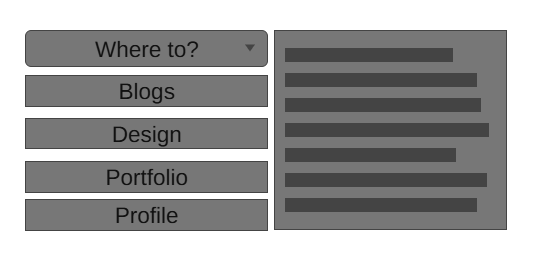
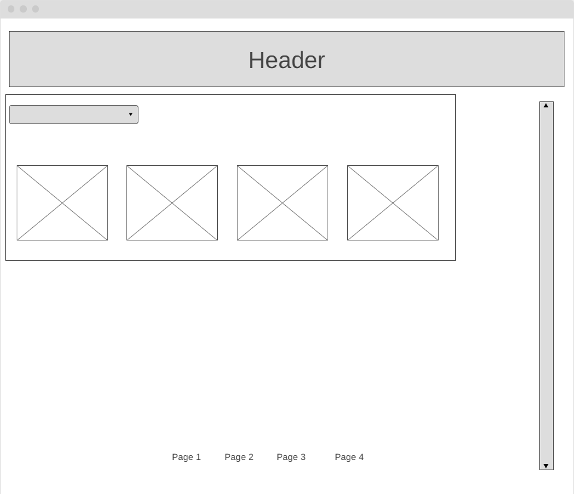
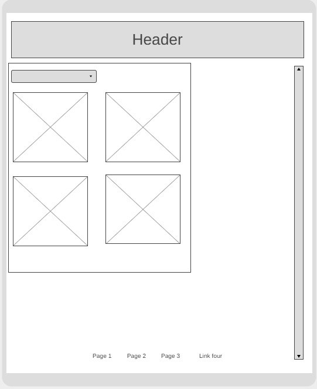

Blog 4
Design Section:
My Goal with the website is to showcase the necessary information but, presented in a way that reflects my interest and potentially my personality (sense of humour?). Another goal is to use this website as a starting point for constructing a CV of sorts, or any way of presenting myself for the purpose of a career. I want users to see my interests present themselves through my work. I want them to look through the sites content and get a good idea of who I am. My users would be anyone who wants to know more about me, what kind of work I do, and how I present my work. My target audience would be fellow people with an interest in game design and potentially future employers. (maybe on a refined version in the future) My content (outside of the course required components) would be my current and future work, as well as my information. My work would most likely be in the form of game design projects, game jams etc. My information would be links to important sites and contact info. I would also include the inspirations, ideas for the site's design.
Early concept for home page navigation menu. I am thinking of drawing heavy inspiration from older video game menus for my website as it represents one of my interests and is fitting for my career choice. This choice will influence my info structure. This menu offers the choice of page to navigate to along with a brief description of the page (maybe like item description from video games?) All the information is bundled together in this menu to emulate the style of video game menus. This would most likely be what the user interacts with after reading the header. The menu is made up of a drop-down, (or button. Haven't decided yet) for navigation nodes, and a text box. The user would use this to get an idea about the pages and navigate to their desired page. (by clicking its respective button) So far, the plans for my websites interface elements are the aforementioned menu and a scroll bar to navigate the page vertically. Plans for the interface elements of other pages haven't been refined yet.
 Since the previous wireframe, I have constructed a slightly refined version. Last time I made the mistake of forgetting a wireframe for mobile devices. This has been corrected. Overall, the general idea is the same with only minor differences between the PC and mobile layout. The navigation menu in the above wireframe is set to be replaced by the previously (video game styled) navigation menu. Other than that, the wireframe is quite simple, and so I don't see anything to change yet. My wireframes still have room for improvement though, even though this one is quite a bit better than my previous attempt.
Reflection on work:
Overall, I'm satisfied with the work I've done on my website so far. The html portion is decently intuitive and I'm beginning to fill the blog portion with its content. Navigation to and from certain pages has been implemented, as ell as minor additions such as an email link, and a photo. I am worried about design, as I usually struggle to envision things in my head and tend to design as I work. Planning and sketching aren't as intuitive to me. Other than that, I'm eager to see how the website develops.